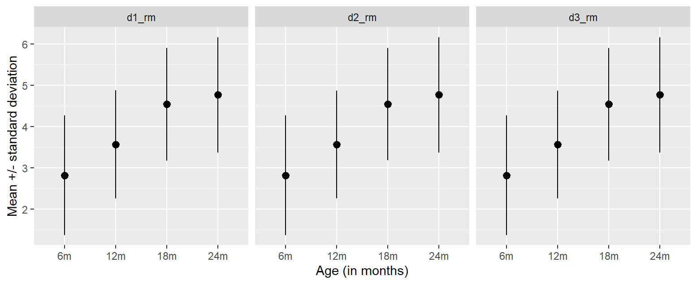

library(tidyverse)
d1_rm <- tibble(values = c(2.14, 1.70, 1.48, 1.41, 3.08, 4.24, 6.04, 2.25, 2.37, 3.49,
1.61, 2.49, 2.62, 4.59, 3.79, 5.23, 2.71, 5.10, 4.88, 2.69,
5.00, 2.38, 7.51, 3.63, 4.11, 5.51, 4.52, 4.92, 4.13, 3.70,
3.17, 4.05, 5.69, 5.4, 6.23, 1.93, 6.26, 5.42, 5.23, 4.31),
age = rep(c("6m", "12m", "18m", "24m"), each = 10),
ID = rep(paste0("ID_", 1:10), 4))
d2_rm <- tibble(values = c(-0.32, 2.78, 5.01, 3.03, 2.48, 1.80, 3.49, 3.55, 4.14, 2.24,
3.13, 2.03, 5.65, 1.95, 3.28, 4.03, 2.75, 5.49, 4.44, 2.96,
5.65, 3.81, 5.91, 3.02, 4.56, 2.51, 6.11, 6.23, 4.08, 3.53,
4.43, 5.8, 4.85, 3.74, 7.13, 3.42, 4.15, 6.95, 3.48, 3.74),
age = rep(c("6m", "12m", "18m", "24m"), each = 10),
ID = rep(paste0("ID_", 1:10), 4))
d3_rm <- tibble(values = c(3.66, 3.21, 3.29, 1.82, 2.19, -0.19, 2.11, 2.81, 4.95, 4.35,
4.71, 4.08, 4.64, 2.10, 2.20, 1.46, 3.17, 3.88, 5.50, 3.95,
5.80, 3.92, 6.29, 3.66, 3.52, 1.96, 4.13, 5.51, 5.97, 4.63,
5.86, 4.74, 6.91, 3.63, 3.44, 2.19, 4.58, 5.84, 4.8, 5.71),
age = rep(c("6m", "12m", "18m", "24m"), each = 10),
ID = rep(paste0("ID_", 1:10), 4))Session 17: Repeated measures ANOVA & paired post hoc tests
A little while ago, we learned about one-way ANOVA tests and how they can be used to determine whether there is a significant mean difference between three or more groups. We didn’t state this explicitly, but the calculations we walked you through were a type of between-subjects ANOVA. This means that we were assuming that each group contains different participants, and each participant appears in only one group. In the penguins example we used to practice running a between-subjects ANOVA, we compared the mean flipper lengths of Adelie penguins from different islands. It is easy to see that in this case each participant (penguin) appeared in only one group, as a penguin (awesome as they are) cannot, in any reasonable sense, originate from more than one island.
We now introduce a slightly modified version of ANOVA, namely the repeated measures ANOVA (RM-ANOVA), also referred to as within-subjects ANOVA. RM-ANOVA assumes that observations within a subject are dependent (correlated) and handles it properly. Being able to run models of this sort is very important when working with data collected longitudinally (which is true for much of the data at Marcus).
Let’s take a look at some simulated data and see if we can illustrate the importance of accounting for repeated (correlated) observations. The chunk below provides code to generate three data sets. These data are similar to the simulated data we have previously studied, but in this case instead of having groups containing different participants, we now have a repeated measures design where groups represent repeated measurements over time done on the same participants. We can imagine that the numeric values represent some eye-tracking derived measure and the age variable the participant ages in months. Each data set has ten participants assessed four times.
A good thing to start with when presented with data of this sort if to plot the mean and standard deviation of the numeric values across the different ages. We have asked you to produce plots of this sort several times before and that’s probably enough so below we share some code to do this and show the plot output. The code should be fairly familiar to you. The one thing you might not recognize is the mutate() call with factor() within it. This is just to make sure the ages are plotted in the correct order (you can see what happens if you remove this line), and this is a trick you will need to use again later.
d1_rm |>
mutate(data = "d1_rm") |>
add_row(d2_rm |>
mutate(data = "d2_rm")) |>
add_row(d3_rm |>
mutate(data = "d3_rm")) |>
group_by(data, age) |>
summarize(mean = mean(values),
sd = sd(values)) |>
mutate(age = factor(age, levels = c("6m", "12m", "18m", "24m"))) |>
ggplot(aes(x = age, y = mean)) +
geom_pointrange(aes(ymin = mean - sd,
ymax = mean + sd)) +
facet_wrap(~data, ncol = 3) +
labs(y = "Mean +/- standard deviation",
x = "Age (in months)")
- From the perspective of means and standard deviations, these data look pretty much identical. If this is indeed true, how would the F-statistics compare across the three data sets? Check if your reasoning is correct by using the
f_stat()function from when we learned about one-way ANOVA.
Since we now have multiple measurements per participant, there is one additional relationship between variables that is worth examining. Previously, when we investigated between-subjects effects, it didn’t make sense to assess whether the groups covaried, since any “ranking together” patterns would have been purely due to random chance. Now, however, we can examine whether, for example, individuals with relatively high measurement values at 6 months also score relatively high at later ages. To explore whether there are different patterns in how the ages covary, we can plot each observation as a dot (using
geom_point()) and connect dots belonging to the same participant with a line (usinggeom_line(aes(group = ID))). Edit the code in the chunk above in order to create a plot of this sort. One way to visually inspect if variables are correlated is to look at how much the lines cross, less crossing meaning that the variables covary more. Can you identify any differences in the relationships between variables across data sets?Next, let’s investigate more directly the extent to which the variables in each dataset correlate. A good way to visualize the strength of these correlations is by plotting a heatmap. You’ve already seen a version of this when we learned about Cohen’s d, but that time we provided the code and now we want you to create the heatmap yourself (with help from this blog post). You should be able to follow the instructions without changing the code much as long as you first turn data into wider format using
pivot_wider(). Create three heatmaps, one for each dataset, and style them to your liking (bonus points if you make circular heatmaps). Make sure the rows and columns are ordered correctly (remembermutate()andfactor()from earlier). Combine the plots into one object using methods from the patchwork package. Be prepared to share your creation during the Wednesday meeting.
We now know that our three datasets are, despite what the mean and standard deviation plots and F-statistics suggest, quite substantially different. It appears that the regular between-subjects ANOVA, as reflected by the F-statistic, misses important information about our observations. This brings us back to the repeated measures ANOVA. It is time for another video.
As clearly illustrated in the Elsevier video, many of the steps involved in calculating the F-statistic are the same for a regular ANOVA and a RM-ANOVA. The main difference is that, because we now have multiple observations per participant, we can partition the sum of squares within (SSW; residual variance) into the portion explained by individual differences (sum of squares for subjects, SSS) and the unexplained variance (sum of squares for error, SSE). The SSS measures how each subject’s mean differs from the grand mean, and therefore the calculation is very similar to how we calculated the SSB the other week.
- We are now going to calculate the RM-ANOVA F-statistic, which is the ratio obtained by dividing the signal (SSB) by the unexplained noise (SSE), using the
d1_rmdata. Reuse the code you wrote earlier to calculate the TSS, SSB, and SSW. Then, modify the code you used to calculate the SSB so that it instead outputs the SSS. Next, calculate the difference between SSW and SSS, which gives you the SSE. Finally, determine the correct degrees of freedom, compute the mean SSB and SSE, and then calculate the F-statistic. You can do it!
- Since calculating the RM-ANOVA F-statistic involves quite a few steps, it is important that we make sure our calculations are done correctly. In the code chuck below we show how to run a RM-ANOVA using the base R function
aov(). Explain the different parts of the code and output, and make sure you understand how these things compare to your manual calculations.
aov(values ~ age + Error(ID/age), data = d1_rm) |>
summary()- Next, we will create a function to calculate the F-statistic. Replace the blanks in the code below so that the function runs as it should.
f_stat_rm <- function(data, values_col, group_col, id_col){
tss <- _____
ssw <- _____
ssb <- _____ - _____
sss <- data |>
mutate(_____) |>
group_by(_____) |>
mutate(_____) |>
ungroup() |>
summarise(_____) |>
pull()
sse <- _____ - _____
n_gr <- data |>
group_by({{group_col}}) |>
n_groups()
n_per_group <- data |>
group_by({{group_col}}) |>
count() |>
ungroup() |>
slice_head(n = 1) |>
pull(n)
tibble(f = (_____) / (_____))
}- Now use the
f-stat_rm()function to calculate the F-statistic ford2_rmandd3_rm. How does the pattern of correlations across observations affect the F-statistic? In other words, what is the effect of correlated within-subject observations on the sum of squared error?
The aov() function used above outputs a p-value that is theory-based. As we know by now, this means it is computed using an analytical formula for the null distribution, based on mathematical theory and assumptions about the data. We prefer not to have to worry about assumptions and such and therefore rely on randomization instead. It is possible to use permutation testing in the context of RM-ANOVA, but the implementation differs from that of a regular ANOVA permutation test. In a RM-ANOVA, each participant acts as their own control and the key question is: Does the pattern of responses across conditions differ systematically within individuals? In other words, we are interested in the within-subject variation (how scores change for the same subject across conditions), not the variation between different subjects. In a repeated-measures design, the null hypothesis states that condition labels don’t matter within each person and therefore we can only shuffle condition labels within that individual’s data. This preserves the dependency structure of the data (each subject’s baseline level, variability and so on) while breaking any systematic condition effect.
- Fill in the blanks in the function in the chunk below so that it can be used to permute data within subjects.
break_assoc_rm <- function(data, variable_to_shuffle, ID_col){
data |>
group_by(_____) |>
mutate(_____) |>
ungroup()
}- Now add the remaining steps needed to perform a RM-ANOVA permutation test and calculate the p-values for the
d1_rm,d2_rmandd3_rmdata.
We know that the effect size most often associated with an ANOVA test is \(\eta^2\), which is a measure of how much of the total variance in the data is explained by the group mean differences (the treatment effect). Would the same exact calculation be suitable in a RM-ANOVA setting? Remember that when calculating the RM-ANOVA F-statistic we are partitioning the residual error into what is explained by individual differences and the remaining unexplained error. Here, we are not particularly interested in the the sum of squares of subjects (the individual variability), and that is why we remove this effect from the residual error before calculating the F-statistic. The same idea applies when we calculate the effect size (in this case referred to as partial \(\eta^2\)).
- Figure out how to calculate the partial \(\eta^2\) (it is very simple once you have already calculated SSB and SSE). Then calculate both the partial and regular \(\eta^2\) values for the
d1_rm,d2_rmandd3_rmdata sets and explain the results. How do the correlation patterns in these data relate to the effect sizes?
The next natural question is: how does working with data that include repeated measures affect how we should think about post hoc tests? The good news is that we can apply the same methods we have already established. We can rely on pairwise comparisons, compare means, and use permutation tests in the same way as for RM-ANOVA: by shuffling values to break the within-subject association between observations and conditions (such as the age conditions in the data examples we have been using). In other words, when conducting post hoc tests in a repeated-measures setting, we are asking: for the same subjects, do their scores differ significantly between condition A and condition B? By permuting values within subjects, we preserve the matched-pairs structure of the data, which is why a test of this kind can be regarded as a paired (post hoc) test.
- Using the
d3_rmdata, we will perform tests comparing the6mand12mages. Start by filtering the data to retain only these two conditions. Next, create two different null distributions: one using thebreak_assoc()function, which does not account for the within-subjects structure of the data, and another using thebreak_assoc_rm()function, which does. For each permuted data set, calculate the mean difference between the two (shuffled) conditions. Compare the resulting null distributions. What differences do you observe?
- Use the null distributions you just created to calculate the paired and unpaired p-values. Compare your results to theory-based t-tests using the
t_test()function from therstatixpackage (setting the argumentpairedto eitherTRUEorFALSE). Note that a theory-based paired t-test is based on some slightly different logic than a regular t-test and you can learn more about it by watching this video (if you are interested).
There is also a paired-samples version of Cohen’s d effect size, which is quite straightforward to compute. First, calculate the differences between the paired sample values. Then, take the mean of these differences and divide it by their standard deviation:
\[ d = \frac{mean_D}{SD_D}\]
- Where \(D\) represents the differences between the paired sample values.
Estimating the paired-samples Cohen’s d for all comparisons in a data frame is slightly more involved. Below, we demonstrate one approach using the d3_rm data. Most of the code will be familiar to you. One function we have not previously discussed is group_split(), which converts a grouped tibble into a list of tibbles. We use this function to ensure the data is in the appropriate format for the subsequent map() call.
d3_rm |>
mutate(age = parse_number(age)) |>
group_by(ID) |>
group_split() |>
map(\(d) cross_join(d, d, suffix = c("1", "2"))) |>
list_rbind() |>
filter(age1 < age2) |>
mutate(diff = values1 - values2) |>
group_by(age1, age2) |>
summarise(m = mean(diff),
sd = sd(diff)) |>
mutate(d = abs(m / sd))- Study the code in the chunk above and make sure you understand all the steps and why they are necessary. Then, calculate the effect sizes for all comparisons across the three data sets we have been working with in this session. Use the
cohens_d()function from therstatixpackage to compute unpaired effect sizes for all data sets and comparisons. How do the paired and unpaired versions of Cohen’s d compare in this case? What explains the difference between them?
Next, we want you to apply the max-Cohen’s d method we introduced in Session 15 to calculate multiple-comparisons–corrected p-values for all comparisons. As a reminder, this involves creating 10,000 permuted data frames (by permuting values within subjects), using the code above (or a slightly modified version and possibly involving writing a new function) to calculate Cohen’s d for all comparisons, extracting the largest d value from each permutation, constructing a null distribution based on these maximum values, and finally using this null distribution to calculate the p-values. After constructing a histogram of the null distribution, determine whether a one- or two-sided p-value calculation is appropriate.
Work in Quarto and produce a final, nicely formatted table (using the
kableExtraorgtpackages), similar to the one shown below. Here we use CSS grid (you can ignore thepage-layout: custompart) to prevent the table from spanning the full width by adding empty columns to the left of the table.
Warning: package 'kableExtra' was built under R version 4.4.3| Comparison | Paired d | p-value |
|---|---|---|
| 6m - 12m | 1.18 | 0.0303 |
| 6m - 18m | 1.98 | 0.0010 |
| 6m - 24m | 1.86 | 0.0015 |
| 12m - 18m | 1.62 | 0.0044 |
| 12m - 24m | 1.43 | 0.0103 |
| 18m - 24m | 0.37 | 0.6965 |